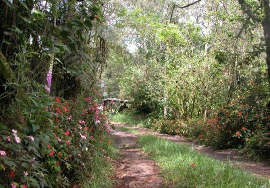
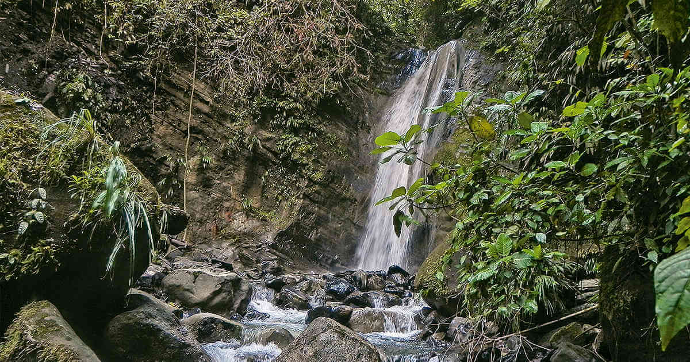
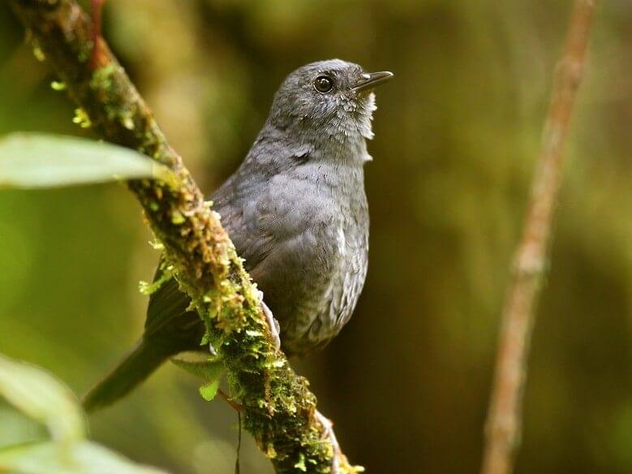
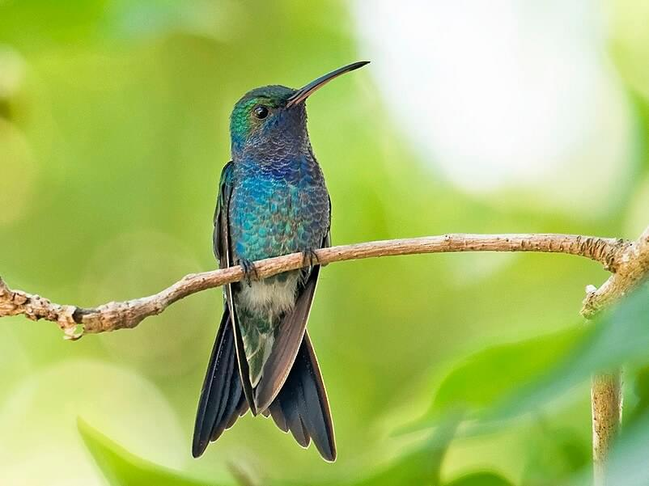
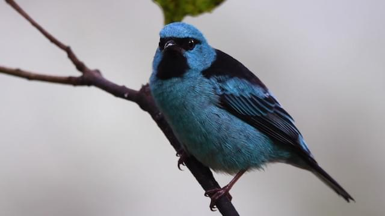
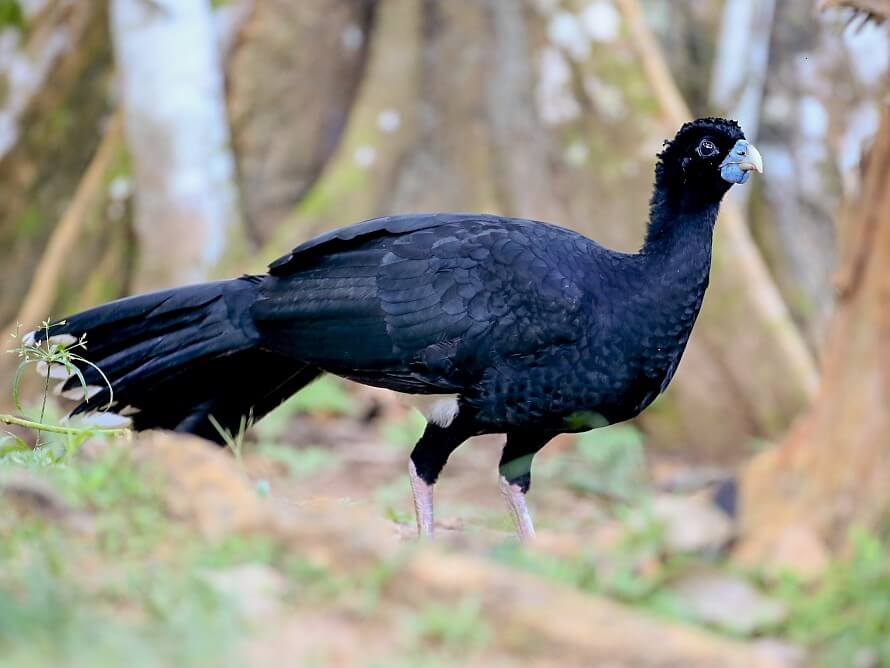
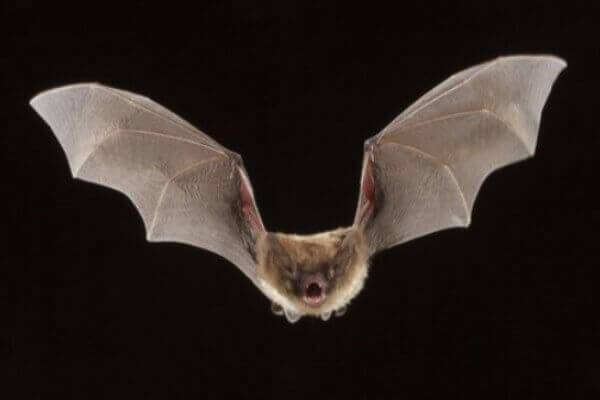
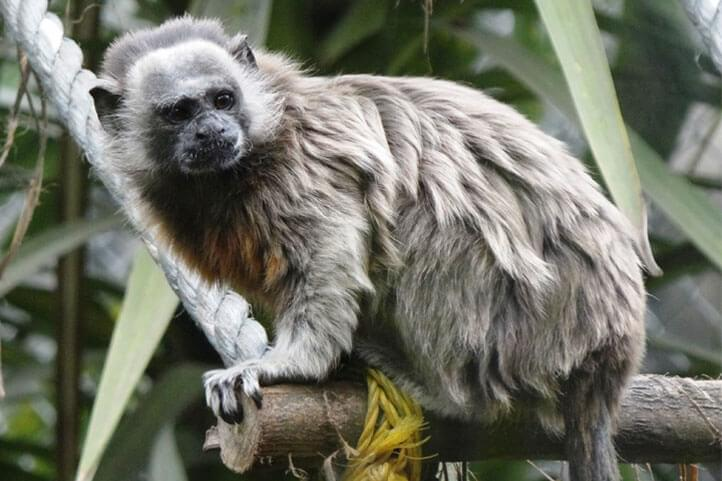
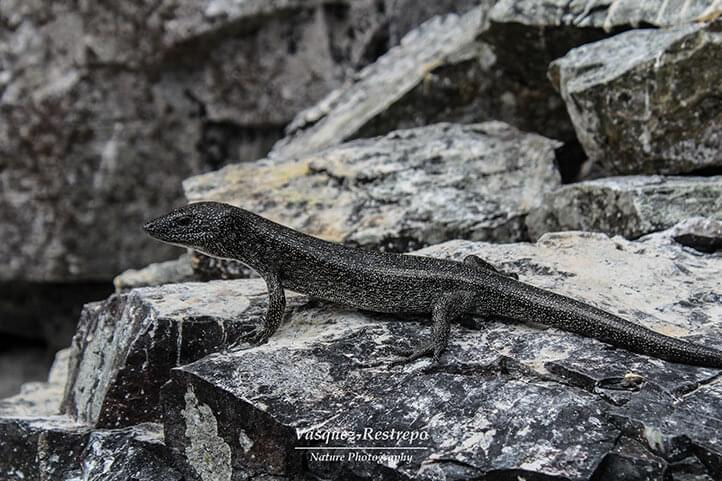
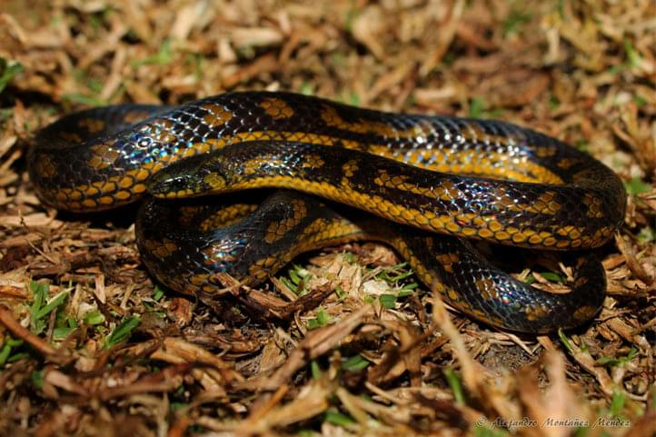

| Ana María Agudelo / Estudiante Cursa séptimo semestre de ingeniería de sistemas en la Universidad Pontificia Bolivariana. Contacto: 3174905643 |
|
| Julián Esteban Durango / Estudiante Cursa séptimo semestre de ingeniería de sistemas en la Universidad Pontificia Bolivariana. Contacto: 3145169979 |
| AICA Bosque de niebla san antonio A 20 minutos de Cali y allí se pueden hospedar en fincas, es gratuito la visita al lugar sin embargo, si deseas tener una caminata guiada te recomendamos que preguntes por un guía de la zona. Se logra hacer avistamiento del ave tángara multicolor. |
|
| Isla Gorgona Gorgona es una isla ubicada a 28 km al oeste de la costa del Pacífico colombiano. Junto con Malpelo, son las únicas islas de Colombia en el océano Pacífico. La entrada tiene un costo de 22.000 pesos colombainos para adultos y 13.500 pesos colombianos para niños. |
|
|  | Rogitama Biodiversidad Es una reserva natural con 29 hectáreas es hoy un reservorio y un banco genético de biodiversidad, tiene como finalidad contribuir a la recuperación y conservación de los bosques, se encuentra en Boyacá, municipio de Arcabuco, vereda Peñas Blancas. |
| Reserva natural de aves Reserva natural de aves el dorado, ubicado en la Sierra nevada de Santa Marta, cuenta con un alto número de especies endémicas de aves y de anfibios amenazados de extinción. La estadía tiene un rango de precios entre 670.000- 1.175.000 pesos colombianos. |
|
| Reserva isla escondida La reserva se sitúa al pie del monte entre los Andes y el Amazonas a una altitud de 850 m. Se ubica en el departamento de Putumayo, Colombia, no lejos de la frontera con Ecuador. Actualmente hay 7 habitaciones disponibles. |
|
|  | Serrania de las Quinchias La serranía de las Quinchas, ubicada sobre el margen derecho del rio Magdalena, entre los municipios de Puerto Boyacá y Otanche con una extensión es de 21.226 hectáreas, esta área posee el último relicto de selva húmeda tropical, en ella hay presencia de biodiversidad representativa del Carare biogeográfico y ha sido identificado ante la nasa como «Hot spot «. Posee un número considerable de aves oferta hídrica. |
| Humedal Pantano la libélula es uno de los humedales no reconocidos por el Distrito en nuestra ciudad. Se encuentra ubicado al sur de la capital, su nombre fue dado por la comunidad vecina pues las libélulas abundan en gran medida en varias temporadas del año. El Humedal de La Libélula se encuentra en el barrio Ontario. |
|
| Humedal torca guaymaral El Humedal de Guaymaral y Torca se encuentra ubicado en el norte de Bogotá y al lado de la Autopista Norte. Específicamente la sección de Torca (24 hectáreas) pertenece a la localidad de Usaquén, mientras que la sección de Guaymaral (49 hectáreas) pertenece a Suba, la división se debe a que el terreno natural del humedal está dividido por la Autopista siendo este el límite de las localidades. |
|
| Parque Arví El Parque Regional Ecoturístico Arví es un parque natural ecológico localizado en el nororiente de Medellín. Cuenta con 16.000 hectáreas, 1.760 de las cuales se encuentran en impecable estado de bosques naturales, y está dotado de 54 kilómetros de senderos para facilitar el desplazamiento y las caminatas de los visitantes. |
|
| Jardín Botánico El Jardín Botánico de Medellín Joaquín Antonio Uribe es un jardín botánico de unas 13.2 hectáreas de extensión, ubicado en la ciudad colombiana de Medellín. Cuenta con un recinto para eventos llamado el Orquideorama, un lugar arquitectónico para la exposición de flores. |
| Ranita venenosa del Valle del Cauca Vive en el estrato más bajo del bosque, entre los 1.580 y 2.100 m de altitud. Deposita sus huevos entre la hojarasca y las larvas se desarrollan en bromelias. |
|
| Rana dardo dorada Este anfibio es actualmente considerado el animal más tóxico y venenoso del mundo. Su hábitat son las selvas húmedas de los departamentos del Chocó, Cauca y Valle del Cauca en la costa pacífica de Colombia |
|
| Rana venenosa de Lehmann Su hábitat natural se conforma de bosque húmedo submontano subtropical o tropical. Cría en las bromeliáceas. |
|
| Rana de Cristal Gigante de Magdalena Su hábitat natural es la Sierra Nevada de Santa Marta, es la única rana de cristal que posee ese instinto materno de cuidar a los hijos. |
| Cacique candela Vive en la canopia y los bordes de bosques tropicales de montañas del oeste de Colombia. Se alimenta de insectos y arañas, también puede alimentarse de algunos frutos. |
|
| Chango de montaña Habita la cordillera oriental de los Andes en Colombia, se alimenta especialmente de saltamontes, grillos, langostas y escarabajos. |
|
|  | Churrin del Magdalena Se alimenta de pequeños insectos y viven en los bosques a baja altura o sobre el suelo. Esta especie ha sido encontrada en el norte del departamento de Santander y en el departamento de Huila. |
| Colibrí florido Esta especie se alimenta de las flores del bosque, habita en los bosques húmedos y secos de la Sierran Nevada de Santa Marta. |
|
|  | Colibrí manglero Su hábitat es el litoral del Caribe en el norte de Colombia, además suele ser agresivo en términos de alimentación. |
|  | Mielero turquesa Su hábitat natural se conforma de bosque, plantaciones y arbolados, es una especie a la que le gustan mucho los frutos. |
|  | Paujil colombiano Esta ave vive en el bajo Cauca, la parte alta de los ríos San Jorge y Sinú y también la Serranía de Jacinto. A este animal le gustan los frutos, la lombriz de tierra y algunos insectos, además algunas ocasiones consume granos de arena. |
| Pinzón cabeciamarillo Generalmente busca el alimento junto a otras especies de pájaros, habita en las cordilleras oriental y occidental de nuestro país. |
|
 |
Príncipe de Arcabuco Esta ave habita los bosques húmedos en los departamentos de Santander, Boyacá y Cundinamarca. Es el animal emblemático del municipio de Arcabuco de allí su nombre. |
| Sierra Nevada Brush-finch Esta especie es endémica de la Sierra Nevada de Santa Marta, al norte de Colombia. |
|
| Tángara multicolor Es un ave que se destaca por sus colores variados en machos y hembras. Esta especie se alimenta de los frutos de los árboles e insectos como larvas y orugas. Habita los bosques de algunos departamentos. |
 |
Mono lanudo colombiano Vive en los bosques de los llanos orientales colombianos, se alimenta de néctar, cortezas, flores y todos los frutos que encuentran en los árboles. |
| Mono tití del Caquetá Su alimento favorito son las frutas, los insectos y las flores. Un dato curioso es que el mono tití elige su pareja y se queda con ella durante toda la vida, también suelen entrelazar sus colas. |
|
|  | Murciélago de alas de saco antioqueño Habita en los bosques, cuevas y hábitats subterráneos (no acuáticos) del departamento de Antioquia, suele alimentarse de insectos en cielo abierto. |
| Tití cabeza de algodón Les gusta mucho comer insectos, frutas, néctar, hojas y lagartijas, suelen vivir en los bosques de los departamentos de Atlántico y Bolívar. |
|
|  | Tití gris Son una de las pocas especies que son capaces de adaptarse a hábitats alterados por el ser humano. Se puede encontrar en la región andina del país. |
| Bolla antha Pertenece a la familia Hesperiidae al igual que la mariposa Phocides. |
|
| Phocides Esta especie endémica de Colombia pertenece a la familia Hesperiidae, la cual se puede encontrar en el departamento del Cauca. |
|
 |
Passova nigrocephala También es conocida como Punta de fuego por el color rojizo característico de su cabeza. Pertenece a la familia Passova, esta subespecie es única en el país. |
| Bagre rayado del Magdalena Vive en aguas dulces y en climas tropicales, específicamente en la cuenca del río Magdalena, el río Cauca y el río Nechi. El tamaño promedio de esta especie es de 57 cm de longitud, pudiendo llegar a medir 100 cm de longitud total. Se caracteriza por tener un color blanco en el vientre, gris en el dorso y un poco de negro en una especie de rayas que atraviesan su cuerpo. |
| Lagartija de Malpelo Suele alimentarse principalmente de hormigas y escarabajos, pero en algunas ocasiones comen caracoles, cangrejos, garrapatas, arañas e insectos como grillos, orugas y moscas. Como su nombre lo indica vive en la isla de Malpelo. |
|
| Lagarto azul de Gorgona Es un pequeño reptil que llama la atención de los investigadores por su brillante color azul. Su hábitat natural es la isla de Gorgona y no se conoce mucho sobre su alimentación. |
|
|  | Lagarto punteado Se puede encontrar en la isla de Malpelo perteneciente al departamento del Valle del Cauca, se alimenta de insectos, gusanos, cangrejos y posiblemente de algunos pajaros pequeños. |
|  | Serpiente sabanera Se alimenta principalmente de lombrices y artrópodos, es una especie no venenosa que viven en regiones frías como Boyacá y Cundinamarca. |